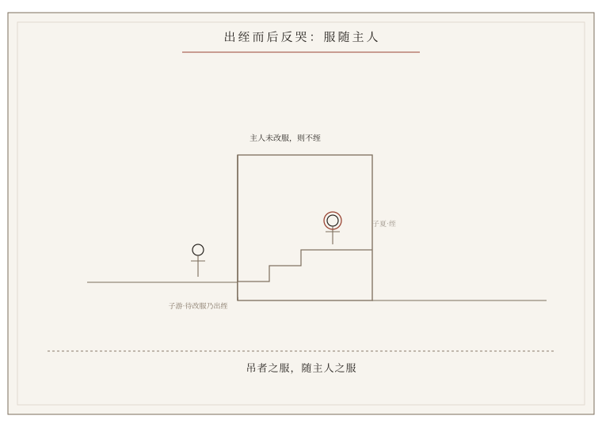

檀弓下 · 四·三十九 · 第 364 课
卫司徒敬子死。子夏吊焉，主人未小敛，绖而往。子游吊焉，主人既小敛，子游出绖，反哭。子夏曰：「闻之也与？」曰：「闻诸夫子，主人未改服，则不绖。」
说什么事：卫国的司徒敬子死了。子夏去吊，主人还未小敛，他就带着绖去了。子游去吊，等主人既已小敛，他才出去加绖，再回来哭。子夏问：「这是听谁说的？」子游答：「听夫子说的——主人未改服，吊者就不加绖。」
落在哪一层：以「随」量礼。论吊者的服，跟着主人的服变，不抢在主人之前。
为何编在此位：上节记孟敬子之不自欺，此节记子夏之一失。一记其情，一记其节。
【经】衛司徒敬子死。子夏弔焉，主人未小斂，絰而往。子游弔焉，主人既小斂，子游出絰，反哭。子夏曰：「聞之也與？」曰：「聞諸夫子，主人未改服，則不絰。」
【注】司徒，官氏，公子許之後。／皆以朋友之禮往，而二人異。
【疏】此一节论吊者主人改服乃改服之事。此唯云「绖」，郑知是朋友者，凡吊者主人成服，则客乃服吊绖；今此随主人，主人始小敛未成服，而已便出着绖，故知有缌之恩，随主人变，如五服亲也。／又至小敛出绖反哭，与子游前裼裘吊朋友同也，前子游云「带绖」，故知是朋友。此下不云「带」，知是朋友者，凡吊则应弁绖环绖之属也。此虽不云「带」，凡单云「绖」，则知有带，犹如《丧服》云「苴绖」，《檀弓》为师「二三子皆绖而出」，及「朋友群居则绖」，皆是包「带」之文也。
司徒 官名，此以官为氏。注云「公子许之后」。
小敛 为尸加衣，在死之次日。小敛之后主人改服。
绖 丧服之首饰与腰饰。单言绖，疏云并包「带」。
出绖 出门之外加绖。子游先以常服往，至主人改服，乃出而加绖。
反哭 加绖之后，还入而哭。
改服 主人由常服改为丧服。
闻之也与 「这是听来的说法吗」，有质疑之意。
闻诸夫子 听自孔子。
卫国的司徒敬子死了。子夏去吊，主人还没小敛，他就带着绖去了。子游去吊，等主人既已小敛，他才出去加上绖，再回来哭。子夏问：「这说法你听谁讲的？」子游答：「听夫子说：主人未改服，吊者就不加绖。」
此章一错一对，只在一个先后。
同一位死者，同一份情谊，两个人只差在「加绖的时辰」。
子夏问一句，子游答一句，礼的一条界线就此立住：吊者之服，随主人之服。
第一层 绖：不是自己的哀，是主人的哀 绖是丧服之首，本是自己居丧所用。
而吊人之丧而加绖，其义不在「我也哀」，在「我与他同哀」。
故其加与不加，不看自己何时动情，看主人何时改服。哀可以自起，服不可以自定。
第二层 子夏之失：抢半步 主人未小敛，形尚未安，服尚未改；子夏已绖而往。
这半步之抢，说重不重，说轻不轻：它把「吊」变成了「我先哀给你看」。
疏云「如五服亲」——亲者之服随主人变，故绖亦随主人变。子夏既非五服之亲，则更无自定之理。
第三层 子游之得：先看，后动 子游先以常服入，见主人已小敛改服，才出门加绖，还入而哭。
一入一出之间，是礼最要紧的一种动作：先看清对方在什么位置，再决定自己站哪里。
今人所谓「会做人」，其古法即此。
第四层 「闻诸夫子」四字 子夏问「闻之也与」，是疑其有所本；子游答「闻诸夫子」，是举其所本。
一问一答，见礼学之传：不是谁的发明，是有人传、有人受、有人验。
礼之所以能历千年而不乱，正因每一条都挂在「闻诸」二字上。
第五层 今日之用：随对方的节奏 今人赴丧、探病、慰问，常急于表达自己的关切：进门即哭，落座即劝。
此节所示，是先看对方到了哪一步：他还没缓过来时，你哭得太早，反成负担。
慰问的第一件事不是说话，是判断。 判断错了，话再好也是错。
与今日何干 凡入他人之丧、之病、之难，先看其服、其位、其时，然后动。急人之急，不如合人之节。
| 左 | 右 |
|---|---|
| 小敛 | 死之次日加衣 |
| 改服 | 主人由常服入丧服 |
| 子夏 | 未敛即绖而往 |
| 子游 | 既敛乃出绖反哭 |
| 绖 | 首绖，兼带 |
| 随主人 | 服不自定 |
| 闻诸夫子 | 礼有所本 |
| 先看后动 | 判断在言之前 |
| 抢半步 | 敬之失 |
画门前的一处阶，视点平视。台阶共三级，阶上一扇门未闭。阶下画一人形，头戴一圈首绖（以额上一条横带示意），作正欲上阶之状；门内深处画另一人形，尚未加绖，只以手扶门框。两人之间不画连线。阶旁另画一小案，案上叠着一件未展开的丧服。赭色只用在那条首绖上。
